DHR in four scenes. Minor classes next to a larger class vanish from the pseudo labels of recent WSS methods, and DHR restores them. USS features separate inter-class regions and WSS features separate intra-class regions, so DHR rebalances the input WSS mask in three steps: OT-based seed initialization, USS rebalancing, and WSS rebalancing (pseudo-mask mIoU on the MS COCO 2014 training set: from 52.6% to 58.6%). The last scene compares DHR with TCL, Grounded SAM, ToCo, and MARS on five benchmarks. The code repository reproduces this demo from the figures of the paper.
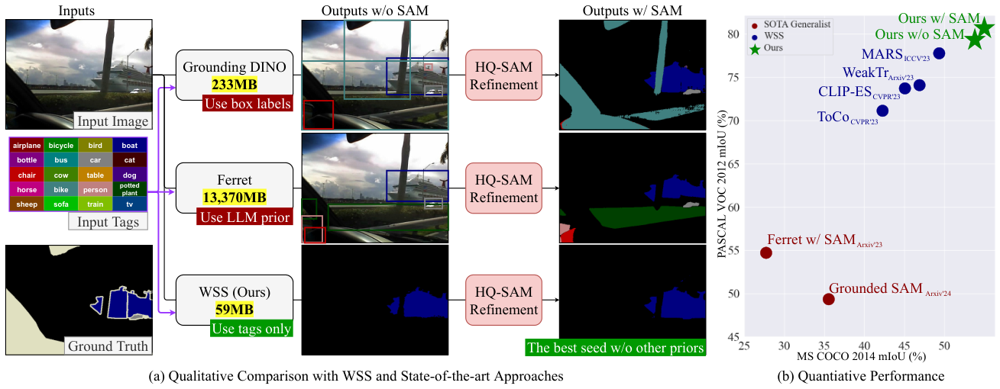
WSS with image-level tags outperforms large-scale vision models. (a) With only image-level supervision and 25% of the parameters, DHR outperforms large-scale vision models (Grounded SAM, Ferret), bypassing the need for extensive human annotations (image, text, and box pairs). (b) DHR exceeds Grounded SAM, Ferret, and recent WSS models (MARS, CLIP-ES, ToCo, WeakTr) on the PASCAL VOC 2012 and MS COCO 2014 benchmarks.
Conventional seed propagation overlooks class ratios: adjacent pixels from distinct classes merge, and spatially minor classes vanish from the pseudo masks. Unsupervised (USS) features distinguish inter-class regions with dissimilar appearances (person vs. motorbike), while weakly-supervised (WSS) features discern visually similar classes within the same inter-class region (dog vs. cat). DHR rebalances the mask hierarchically, first across inter-class regions with USS features and then across intra-class regions with WSS features, restoring all classes without losing minor ones.
Weakly-supervised semantic segmentation (WSS) generates pseudo masks from image-level tags by propagating initial class activation maps (CAMs). Comparing WSS predictions with ground-truth masks uncovers a significant challenge: adjacent pixels from distinct classes often merge, and the spatially minor class disappears. On the VOC dataset, adjacent regions constitute 35% of the total area, with 79% being inter-class regions, while the COCO dataset has 75% adjacent regions, 55% of which are inter-class.
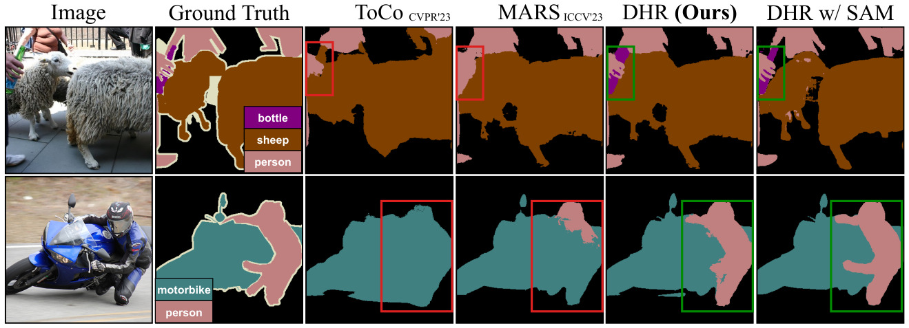
Vanishing problem of adjacent minor classes in WSS outputs. Red boxes mark the false prediction of minor classes (e.g., bottle and person) in pseudo labels generated from WSS. Green boxes highlight DHR outperforming state-of-the-art baselines (ToCo, MARS) in adjacent class regions.
Unsupervised semantic segmentation (USS) methods learn visual similarities such as color and shape between images without tags, which lets them distinguish inter-class regions with dissimilar appearances (person vs. motorbike).
WSS methods learn class-specific differences with human-annotated tags, which lets them discern visually similar classes (dog vs. cat) within the same inter-class region (animals).
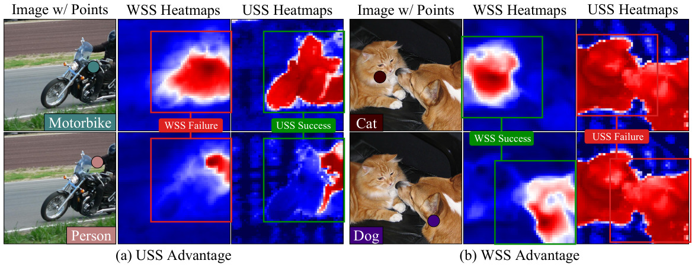
Heatmaps of WSS and USS features with target points. (a) USS features precisely separate inter-class regions (person vs. motorbike), unlike WSS features. (b) Thanks to training with image-level class labels, WSS features discern specific classes (dog vs. cat) in the same inter-class region (animal).
Weakly-supervised semantic segmentation (WSS) ensures high-quality segmentation with limited data and excels when employed as input seed masks for large-scale vision models such as Segment Anything. However, WSS faces challenges related to minor classes since those are overlooked in images with adjacent multiple classes, a limitation originating from the overfitting of traditional expansion methods like Random Walk.
We first address this by employing unsupervised and weakly-supervised feature maps instead of conventional methodologies, allowing for hierarchical mask enhancement. This method distinctly categorizes higher-level classes and subsequently separates their associated lower-level classes, ensuring all classes are correctly restored in the mask without losing minor ones.
Our approach, validated through extensive experimentation, significantly improves WSS across five benchmarks (VOC: 79.8%, COCO: 53.9%, Context: 49.0%, ADE: 32.9%, Stuff: 37.4%), reducing the gap with fully supervised methods by over 84% on the VOC validation set. Code is available at https://github.com/shjo-april/DHR.
We identify and tackle the issue of minor classes disappearing in WSS: adjacent pixels from distinct classes merge during propagation, and the spatially minor class is lost from the pseudo mask.
DHR enhances class distinction through seed initialization based on optimal transport, then leverages USS and WSS features to separate inter- and intra-class regions.
DHR achieves a state-of-the-art mIoU of 79.8% on the PASCAL VOC 2012 test set, proves effective as a seeding technique for SAM, and is evaluated with recent WSS methods on three additional benchmarks (Context, ADE, Stuff).
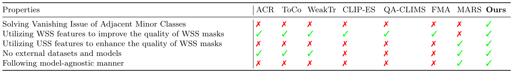
Conceptual comparison with recent approaches. DHR is the only method in the comparison that solves the vanishing issue of adjacent minor classes. It utilizes both WSS and USS features to improve WSS masks, needs no external datasets or models, and follows a model-agnostic manner.
To integrate easily with other WSS methods, DHR refines pre-propagated WSS masks during the segmentation learning phase rather than replacing existing propagation tools. It comprises three steps, and the rebalanced masks train the segmentation model recursively.
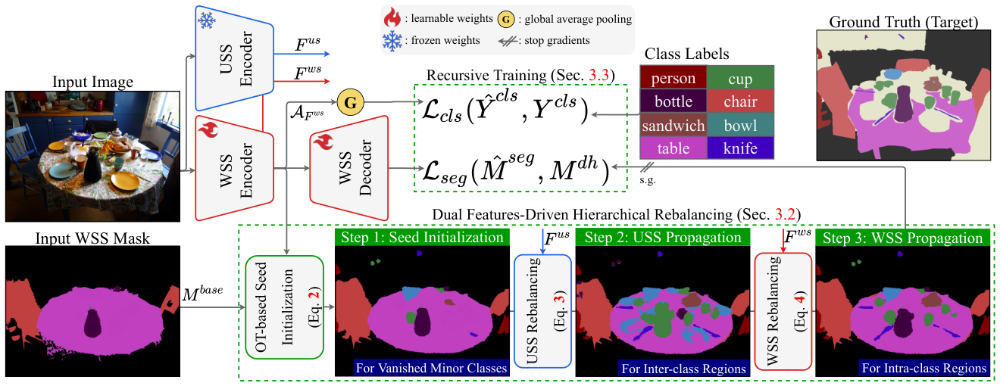
Overview of DHR. The framework unfolds in three steps. It recovers vanished classes by replacing pixels of the input WSS mask with OT-based CAMs for seed initialization. It then propagates the restored seeds hierarchically, using unsupervised feature maps for inter-class segregation (e.g., kitchenware) and weakly-supervised features for intra-class differentiation (e.g., bottle and cup). Finally, the balanced masks are used to train the segmentation model recursively.
To restore minor-class regions that vanish during the traditional propagation process, DHR revisits the CAMs utilized before the propagation. Optimal transport (OT) minimizes the occurrence of false positives in regions adjacent to the target classes, and the recovered minor-class regions are integrated with the input WSS mask to initialize the mask.
Class-level average pooling of the unsupervised feature map with the initial mask produces a USS centroid for each class. Clustering the pixels around these centroids by cosine similarity, followed by OT-based optimization, aids the distinct categorization of inter-class regions (e.g., kitchenware and furniture).
WSS centroids are generated in the same way from the weakly-supervised feature map, and the WSS-based clustered mask refines the USS-based mask for precise intra-class segregation. A pruning operator applies WSS rebalancing only to highly correlated USS centroids (similarity above τ), that is, to classes that USS cannot distinguish.
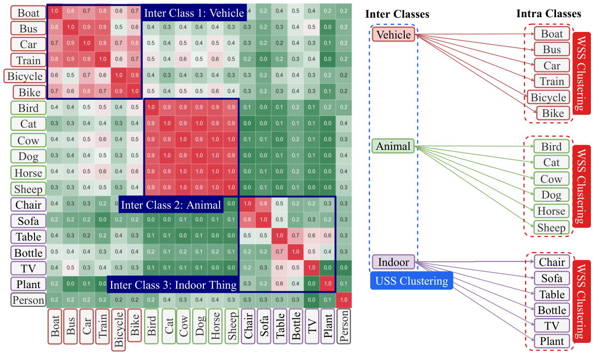
Conceptual illustration of the hierarchical clustering. Left: the USS feature correlation automatically groups inter classes. Right: USS features categorize all inter classes (e.g., vehicle and animal), and WSS features then separate the intra classes (e.g., car and bus) of each inter class (e.g., vehicle).
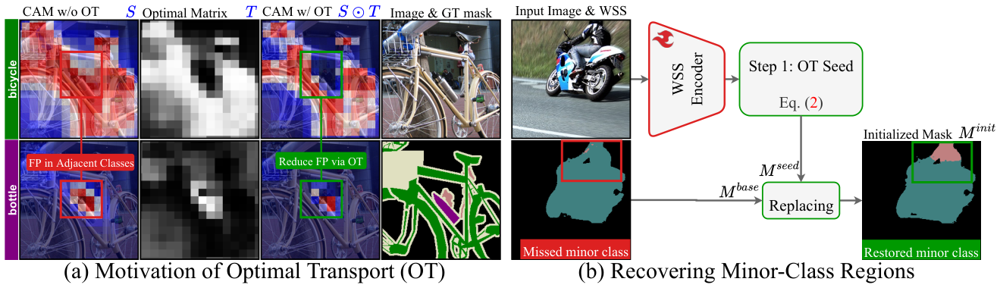
Recovering minor-class regions from CAMs with OT. (a) OT reduces false positives in adjacent class regions (e.g., bottle vs. bicycle). (b) The input WSS mask often misses most minor-class areas (the person in the red box). Refining CAM seeds with OT eliminates overlapping areas and restores the minor-class regions that had vanished, as indicated in the green box.
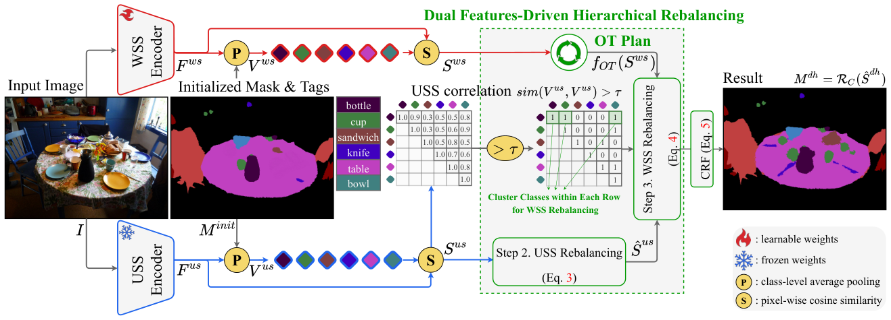
Hierarchical rebalancing based on dual features. Starting from the initialized seeds with restored minor-class regions, USS features are used for inter-class grouping, and WSS features are then applied for intra-class separation within each inter-class region. WSS rebalancing is applied conditionally, to classes with high USS correlation that USS cannot distinguish.
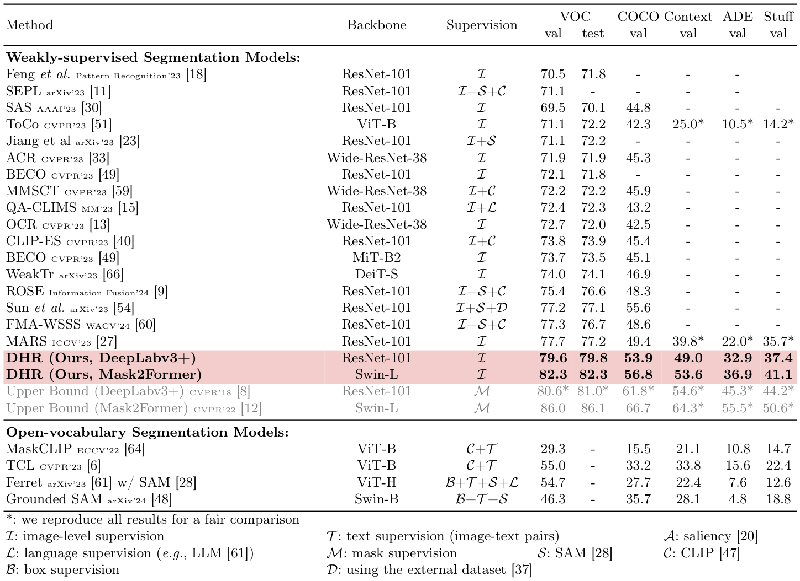
Performance comparison of WSS methods across five benchmarks (mIoU, %). Depending solely on image-level supervision, DHR with ResNet-101 and DeepLabv3+ reaches 79.6 and 79.8 on the VOC val and test sets, surpassing MARS, the previous state of the art, by at least 1.9 in the same configuration. With Swin-L and Mask2Former it reaches 82.3 on both sets. DHR also stays above the open-vocabulary models (MaskCLIP, TCL, Ferret with SAM, Grounded SAM) on all five benchmarks.
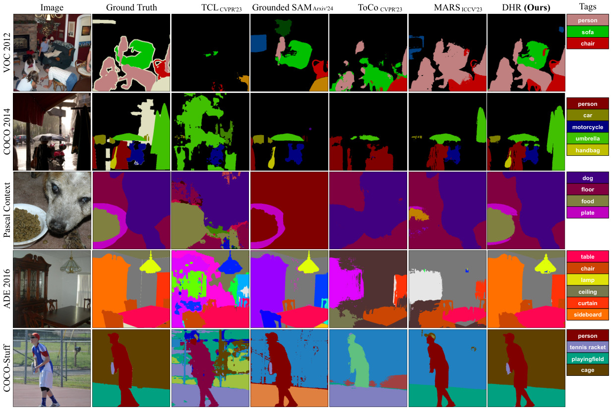
Qualitative comparison on the five benchmarks. With the same tag inputs as TCL, Grounded SAM, ToCo, and MARS, DHR delineates the semantic boundaries between adjacent classes more accurately.
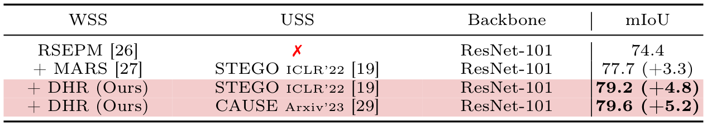
Two USS methods on the PASCAL VOC 2012 validation set. On the RSEPM baseline (74.4% mIoU), DHR gains +4.8 with STEGO and +5.2 with CAUSE: both USS methods give a comparable improvement of approximately 5%.
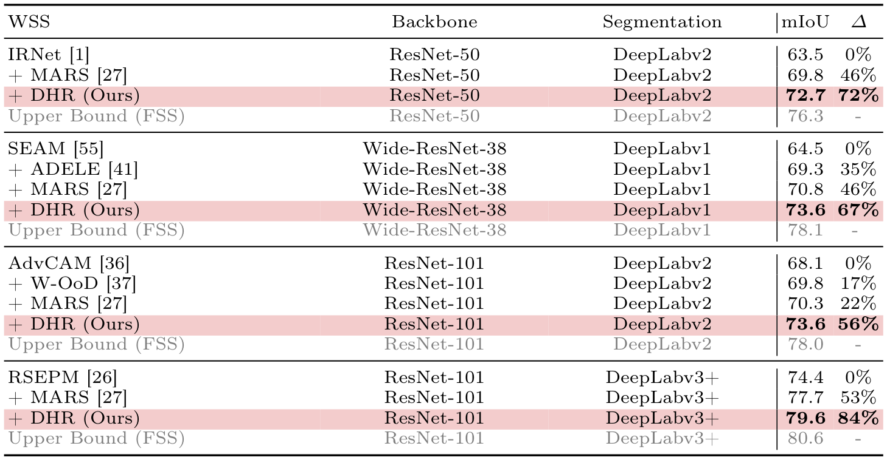
Four WSS methods on the PASCAL VOC 2012 validation set. Δ is the percentage improvement in the gap between WSS and fully supervised segmentation (FSS). On IRNet, SEAM, AdvCAM, and RSEPM alike, DHR outperforms the other model-agnostic approaches (ADELE, W-OoD, MARS) and reduces the gap by 56% to 84%.
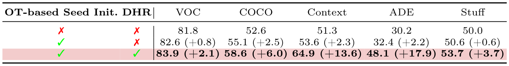
Quality of pseudo masks (mIoU) on all training datasets. OT-based seed initialization alone enhances the performance by recovering vanished classes, and adding DHR has a notably larger effect. On Context and ADE, which are composed solely of adjacent classes, the improvement is at least 13.6.
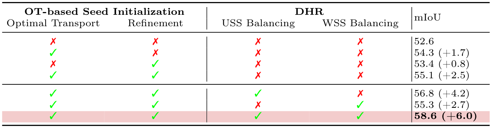
Each component on the MS COCO 2014 training dataset. Optimal transport with CRF refinement for seed initialization adds +2.5 over the baseline (MARS, 52.6). USS balancing followed by WSS balancing reaches +6.0, above USS balancing alone (+4.2) and WSS balancing alone (+2.7), which supports the sequential application of USS followed by WSS.
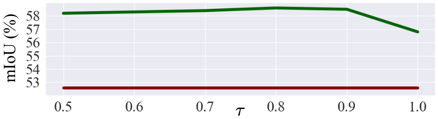
Sensitivity to τ on the COCO training dataset. Setting τ to 1.0, which bypasses WSS balancing, results in only a slight improvement over the baseline (red line). Adjusting τ between 0.5 and 0.9 has minimal impact on segmentation accuracy.
@inproceedings{jo2024dhr,
title = {DHR: Dual Features-Driven Hierarchical Rebalancing in Inter- and Intra-Class Regions for Weakly-Supervised Semantic Segmentation},
author = {Jo, Sanghyun and Pan, Fei and Yu, In-Jae and Kim, Kyungsu},
booktitle = {European Conference on Computer Vision (ECCV)},
year = {2024}
}